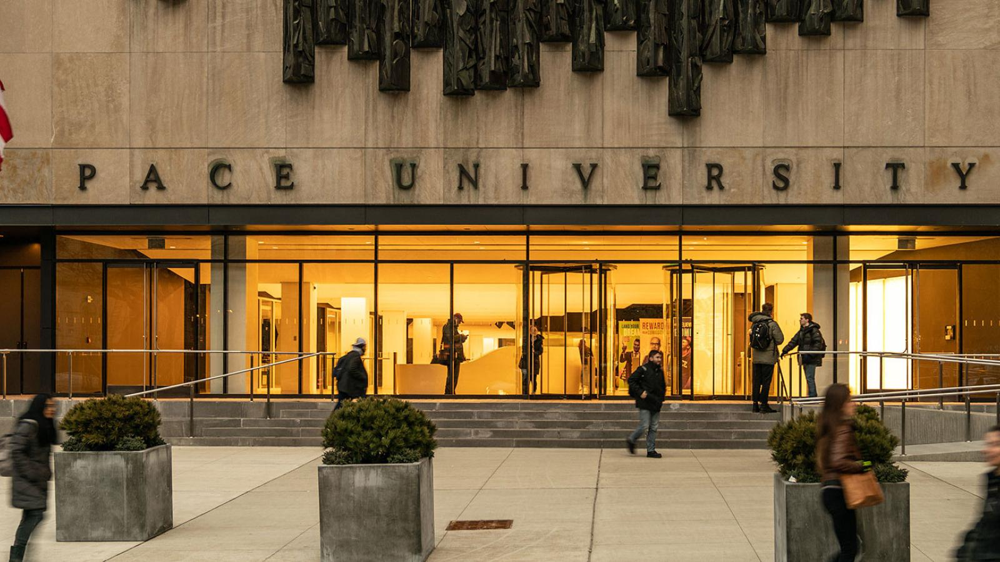
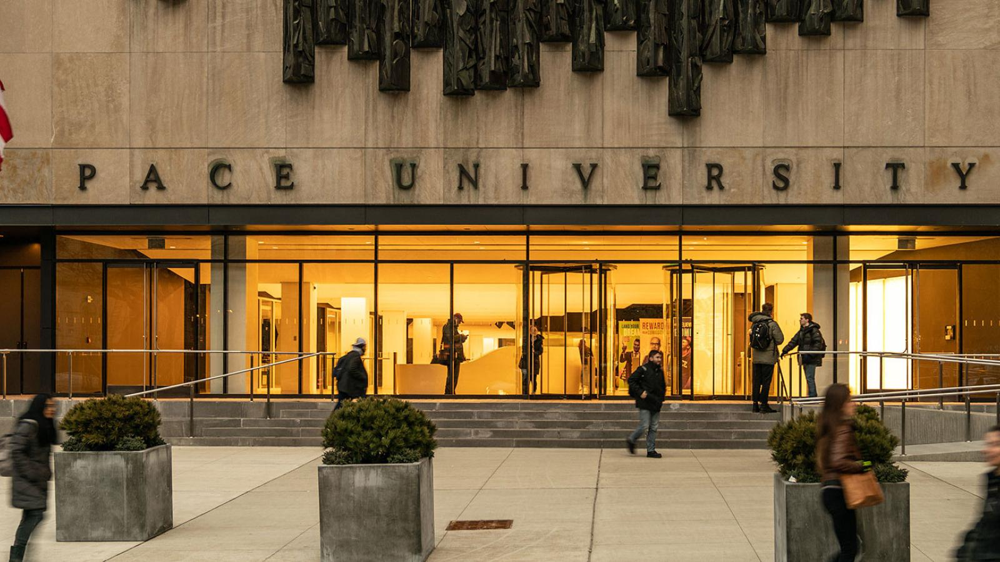

Background
Micahael Samuel was born on Febuary 3, 2005 in New York City. He has 4 siblings, a cat, and is currently focused on doing well in his classes. He moved to connecticut for middle and high school and is now back in New York City for college. He is a commuter from brooklyn who likes to visit his family on the weekends. More on this in "Education".
Education
Micahael went to middle school for one year at a private school in Queens. He did his final middle school years at a Connecticut public school. He did all 4 years of highschool at Trubull High School in Connecticut. Micahael has decided to come back to New York for his undergraduate at Pace University. He is a sophmore as of 9/2/23 and is majoring in Biology. He is still excited to learn more about Web Design.
Interests
Micahael is very interested in learning about any area in the natural sciences. He is hoping to one day become a engineer in order to apply his knowledge of biology. In his free time he enjoys playing video games, riding his bike, and sometimes hiking. He also finds puzzles like sodoku and minesweeper to be fun.
.jpg)
 
